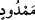
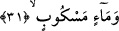

30. Uzamış gölgeler,
Uzayan, kısalmayan ve değişmeyen gölgeler. Şafağın sökmesi ile güneşin doğması
arasındaki gölge gibi. Araplar, kesintisiz olarak devam eden bir şeyi ifâde temek için
âyet-i kerîmede geçen __WORD__ (memdûd) kelimesini kullanırlar. Bir hadis-i şerifte
Peygamberimiz (s.a.). “Cennette bir ağaç vardır ki, gölgesinde binit üzerindeki bir
adam yüz yıl yürür de gölgesi kesilmez”[202] buyurmuştur.
İbn Abbas (r.a.) şöyle demiştir: Cennette gövdesi üzerinde duran bir ağaç vardır.
Cennet halkı ona çıkar ve kökleri üzerinde konuşurlar. Onlardan bazı kişiler dünyayı
hatırlayıp oradaki bazı oyunları arzu ederler.Bunun üzerine Allah Teâlâ, cennetten bir
rüzgar gönderir, ağaç sallanarak hareket eder de dünyadaki bütün oyunları gösterir.
Keşfü’l-esrar’da şöyle demiştir: Âyet-i kerîmede geçen “gölge” anlamına gelen “zıll”
kelimesinin “korumak”tan ibaret olması mümkündür. Arapçada, “filan, falanın
gölgesindedir” tâbiri, “o, o kişinin muhâfazasındadır” demektir. Bu mânânın doğru
olduğu söylenebilir. Çünkü cennette güneş yok ki, gölge bulunsun.
Fakir (Bursevî) der ki; oradaki gölgeden maksad, râhat ve huzur demektir. Nitekim
Allah Teala: “İnanıp iyi işler yapanları da, içinde ebediyen kalmak üzere
girecekleri, zemininden ırmaklar akan cennetlere sokacağız. Orada onlar için
tertemiz eşler vardır ve onları koyu (tatlı) bir gölgeye koyarız” (en-Nisa 44/57)
buyurmaktadır. Bir kimse, gölgeye istirâhat etmek için oturur. Araplar, kendi ülkelerinde
gölgeye çok önem verirler. Çünkü o muhitlerde güneş sıcağı pek kuvvetli, gölge ise az
bulunur. Peygamberimiz (s.a.)’in şu hadis-i şerifi de bu kabildendir: “Sultan yer
yüzünde Allah’ın gölgesidir. Her mazlum varıp ona sığınır.”[203] Yâni âdil olması
hâlinde mazlum onun adâletinde rahat ve huzur bulur demektir. Arapların, “Allah onun
gölgesini uzatsın” tarzındaki sözleri de bu anlamdadır. Yâni, onun adâlet ve
merhametinin gölgesini o kadar uzatsın ki, bütün insanların rahat ve huzur bulmasına
vesîle kılsın demektir.
31. Çağlayarak akan sular,
Bu sular, onlar için çağlayan hâlinde akıtılır; nerede ve nasıl isterlerse o şekilde
dökülür. Bunun için bir yorgunluğa gerek yoktur. Ya da her hangi bir ark’a, su mecrâsına
ve kuyuya ihtiyaç duymadan akarsu hâlinde kesilmeksizin akıtılır. Yâni, “suyun çok
akıtılmış olması”, her hangi bir yere veya şekle mahsus olmaksızın açıktan görünür
halde olmaktan veya akar su hâlinde bulunmaktan ibarettir. Arapların akar suları yoktu.